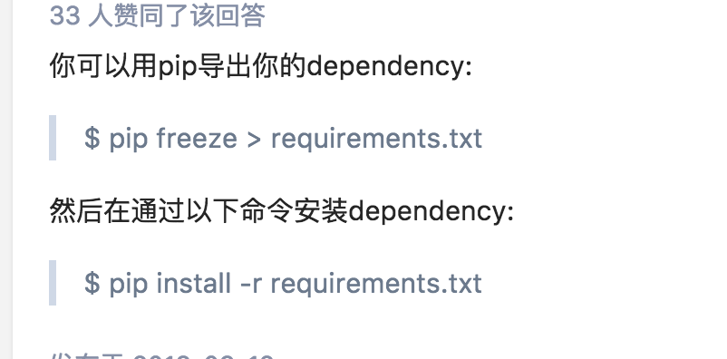

1 . 虚拟环境目录
cd /test/Python-2.7.10
source stock/bin/activate
python -V
cd
2 . mysql 安装
3 . 新建数据库
stock
4.执行迁移：执行sql语句生成数据表
python manage.py migrate
5 .uWSGI安装与配置
ps aux | grep uwsgi
sudo killall -9 uwsgi
启动：uwsgi --ini uwsgi.ini
6 . JS 处理表格
7 . 定时脚本:
/zzy/python-workspace/stockpytask.sh
crontab 例子
cron服务是linux的内置服务，但它不会开机自动启动。可以用以下命令启动和停止服务：
/sbin/service crond start
/sbin/service crond stop
/sbin/service crond restart
/sbin/service crond reload
要把cron设为在开机的时候自动启动，在 /etc/rc.d/rc.local 脚本中加入 /sbin/service crond start 即可
查看当前用户的crontab，输入 crontab -l；
crond 加入到开机启动
chkconfig --level 2345 crond on
以下方法将每10秒执行一次
* * * * * sleep 10; /bin/date >>/tmp/date.txt
不执行定时任务的原因
1，首先确保sh脚本具有可执行属性
chmod 777 ***.sh
crontab的日志位置一般位于/var/log/cron，利用下面的语句即可查看日志
tail -f /var/log/cron
8 .
———mac
1 . workon book
2 .cd /Users/zzy/PycharmProjects/python-workspace/stock
9 . 打包
